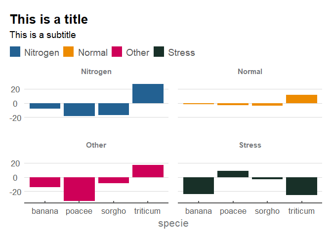

The goal of esctheme is to create ggplot2 charts in the Essential Services Commission of Victoria style.
Installation
You can install the development version of esctheme from GitHub with:
# install.packages("devtools")
devtools::install_github("ESC-Economics/esctheme")Example
This is a basic example which shows you how to use the theme:
## basic example code
# create a dataset
esc_colours <- esc_palette()
specie <- c(rep("sorgho" , 4) , rep("poacee" , 4) , rep("banana" , 4) , rep("triticum" , 4))
condition <- rep(c("Normal" , "Stress" , "Nitrogen", "Other") , 4)
value <- rnorm(16 , -5 , 15)
data <- data.frame(specie,condition,value)
data <- data %>%
arrange(specie, rev(value)) %>%
dplyr::group_by(specie) %>%
dplyr::mutate(label_y = cumsum(value)-0.5*value)
# Plot data with ESC style
data %>%
ggplot(aes(fill=condition, y=value, x=specie)) +
geom_bar(position="stack", stat="identity") +
scale_fill_manual(values = esc_colours) +
facet_wrap(~condition) +
labs(title = "This is a title",
subtitle = "This is a subtitle") +
esc_theme(rm_y_leg = TRUE)